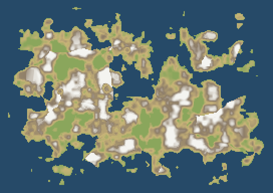
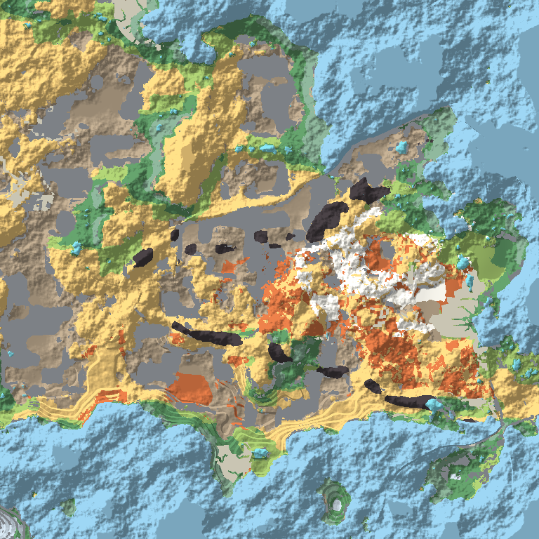

Bigger worlds
The world is built from one coarse field and sharp windows cut out of it. The coarse field is one cell to 8 tiles and keeps the shape of the land, the sea, the lakes and the big drains, so it is small enough to hold for a very large world. A window is a square of tiles at one tile to the metre, made when somebody looks at it, with the same code that makes the whole world today. This page measures how closely the two ways agree.
Source: src/sim/terrain/coarse.ts: buildCoarse, sampleGrid, src/sim/terrain/window.ts: buildWindow, coarseOcean, src/sim/geology/geology.ts: relaxTable, GeologyOptions, src/sim/fauna/fauna.ts: catchUp, advanceRegion, capture, restoreState, tools/riverTest.ts, tools/windowTruth.ts: the comparison
1The coarse field
The coarse field holds heights built from the broad octaves only (the plates, landforms and the first three noise octaves reach it; the finest noise does not), the sea, the lakes with their level, which way every cell drains and how much water passes. It runs the same priority flood and flow accumulation as the dense world, on a grid of 8 tile cells. Heights and the rock layers are functions of position, so they need no grid at all; only the drainage and the rain do.
The rain model measures every step in tiles of the same size and solves it exactly (the fall-out is an exponential, then a steady floor), so it gives the same climate whatever the cell, and its reach and humidity grow with the width of the world (WORLD_SIZE_FACTOR), so the same continent has the same climate at any size. Climate is made on its own grid, 8 tiles to a cell at this size and 8 times the world factor in general, from the mean of the heights inside each cell, and the field reads it smoothly. Rain made that way correlates 0.91 with rain made at every tile, and what has to be fine is only the drainage, which keeps its answer down to cells of about 16 tiles and degrades beyond 32.
The plates grow with the world (PLATE_SCALE), so a bigger world has the same few continents, larger, and a lake is what its inflow can feed: half the rain that reaches a closed basin against the evaporation of its surface, so lakes stay a few percent of the land at every size.

2A window
A window is 256 tiles across with a 32 tile border that is thrown away. Inside it the heights are the real heights at every tile, the sea is every tile below sea level next to coarse ocean, the lakes fill from the levels the coarse field gives at the border, and the water drains by the same flood and steepest descent as the whole world. Nothing in a window depends on where it was cut, so two windows overlapping agree (99.9% of tiles).

| Cost | Value |
|---|---|
| One window | 105 ms for 102k tiles with geology |
| Coarse field | 465 ms for 52,224 cells |
| Whole world for the check | 3.4 s |
3How closely windows agree
Every number here is measured by running the whole world at once on the same rain, then cutting 18 windows and comparing tile by tile (npm run rivers does the same at any size).
| What is compared | Agreement | Note |
|---|---|---|
| Water class (land, ocean, lake) | 97.9% | every tile of every window |
| Lakes, share of the land | 3.4% in windows, 2.5% whole | the same lakes are not required, only as many of them; overlapping windows agree on every tile of water |
| River tiles found within 2 tiles | 98.4% | of every river tile in the whole-world run |
| River tiles that are real within 2 tiles | 82.5% | of every river tile a window draws |
| Climate biome | 97.5% | before the rock is consulted |
| Final biome, from the rock | 97.3% | rock, karst, salt, badlands, volcanic |
| Fertility | off by 2.9 of 200 | mean over every tile |
4Geology in a window
The geology already works on cells of 4 x 4 tiles, so a window builds its own: plates and volcanoes by position, soil and rock from the window's wetness and heights, the surface biomes from the rock. The groundwater table is the one thing that reaches beyond a window (it spreads down a slope from any water however far), so each window starts from the coarse field's table and takes the lower of the two.
| Per 4 x 4 tile cell | Agreement | Note |
|---|---|---|
| Rock series | 99.5% | 73,728 cells |
| Surface rock | 99.7% | |
| Soil depth | off by 1.94 of 255 | mean |
| Mineral and rock features | off by 0.46 of 255 | mean over the ten features |
| Water table | median 821.28 m, 90th percentile 828.2 m | from the coarse table where water is out of view |
The geology was also made faster without changing a single result: the noise that is read along a row of tiles keeps its lattice corners, the nearest plates and volcanoes are kept for the cell being walked, and the per-cell closures and lookups are gone. Making the heights 40% faster and the rock 40% faster took the whole world from 5.4 s to 3.9 s of CPU.
5In the game
create world has a size row: small is the world the game was made at (one pass, as before), medium is 1.5 times as wide and large twice as wide. A medium or large world is made from windows: the coarse field first, then every 256 tile window, assembled into the same arrays the rest of the game reads, then the rock once over the whole. The world is still held whole in memory, so this tests the generation, not the memory; the size is fixed for a page session, so choosing another size reloads the page and carries on from the menu.
6What it costs
Measured on this machine by making the world 1, 2, 3 and 4 times as wide as today.
| World | Dense generation | Memory held | Windowed |
|---|---|---|---|
| 3.3 km2 (today) | 3.0 s | 330 MB | coarse field in under 0.2 s |
| 12.4 km2 | 12.8 s | 1.1 GB | coarse field in under 0.5 s |
| 27.3 km2 | 25.7 s | 2.4 GB | coarse field in under 0.5 s |
| 48 km2 | about 50 s for the whole-world check | too much for a tab | coarse field 0.7 s, 97 ms a window |
The coarse field is about 45 bytes a cell, so cells of 8 tiles reach about a 30 km square in a tab and cells of 32 tiles about 100 km. Real world size above that needs a coarser level for the climate.
7Ground nobody watched
The food web keeps one number per species and stage in every patch of 16 tiles, so ground that is out of view can be brought up to date when the player returns instead of being simulated all the time. Fauna.catchUp advances only the patches around a region, at a step of 0.05 for the first 2 years and 0.1 after that, for at most 20 years, and capture and restoreState save only the patches that were disturbed. Steps of 0.25 or more do no better than leaving the scene as it was, because they smooth away the boom and the crash.
| Away | Same scene | Catch-up, step 0.05 then 0.1 | Cost for 100 patches |
|---|---|---|---|
| 1 year | median error 0.2, 70% of species within 2x | median error 0.04, 90% within 2x | 134 ms |
| 4 years | median error 0.29, 64% within 2x | median error 0.08, 80% within 2x | 410 ms |
It costs about a millisecond for each patch and year, so a square kilometre left for a year takes about four seconds. A patch with a margin of one or two patches around it is enough.